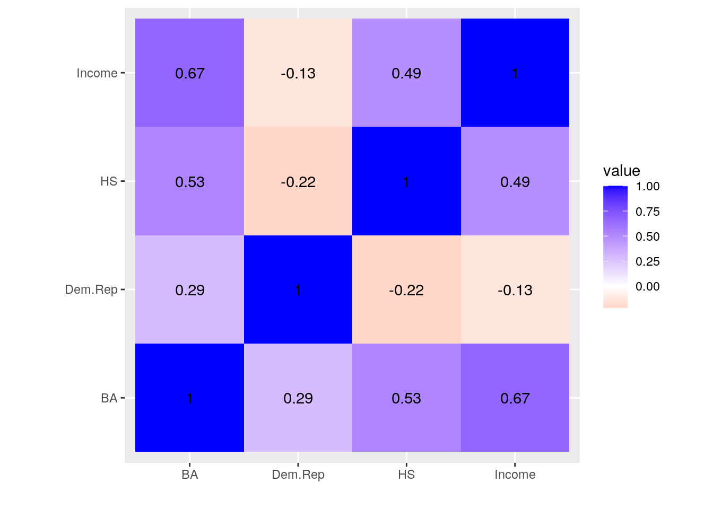
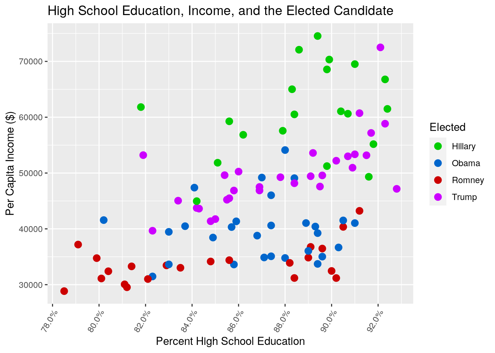
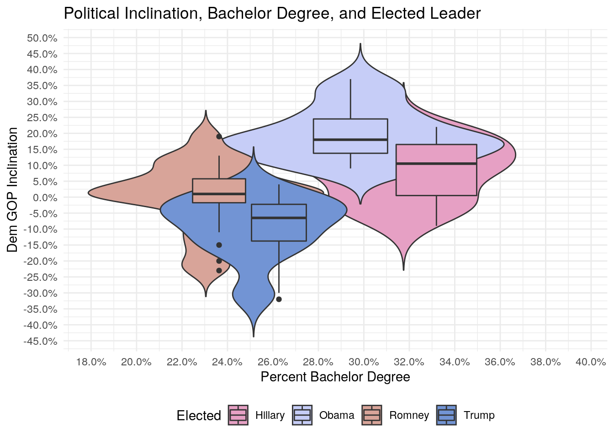
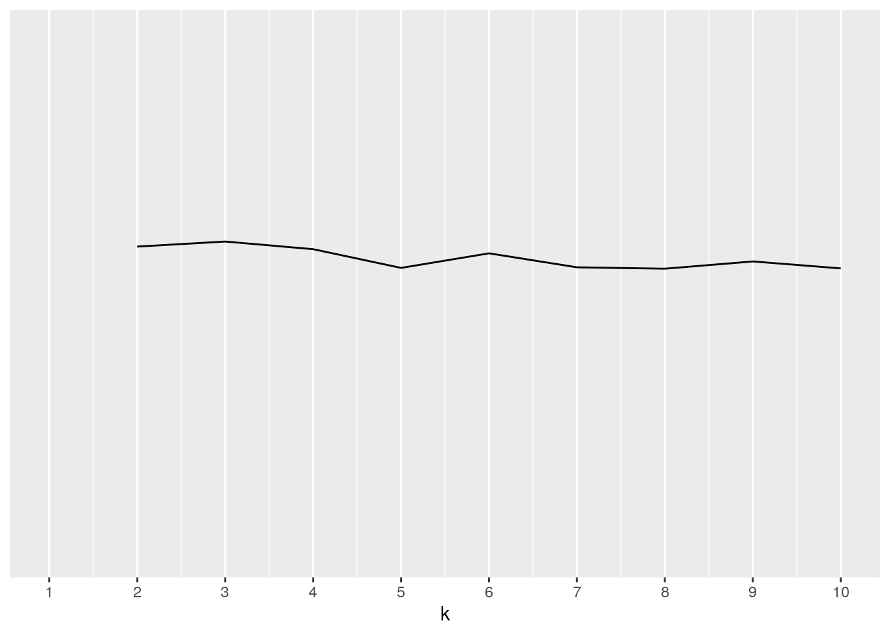
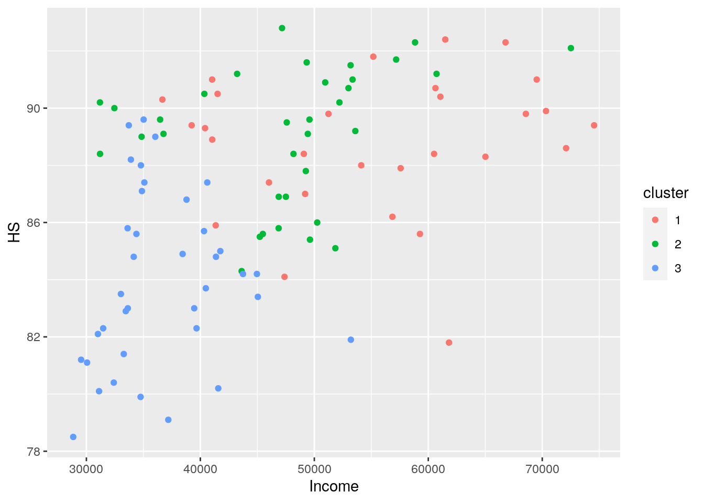
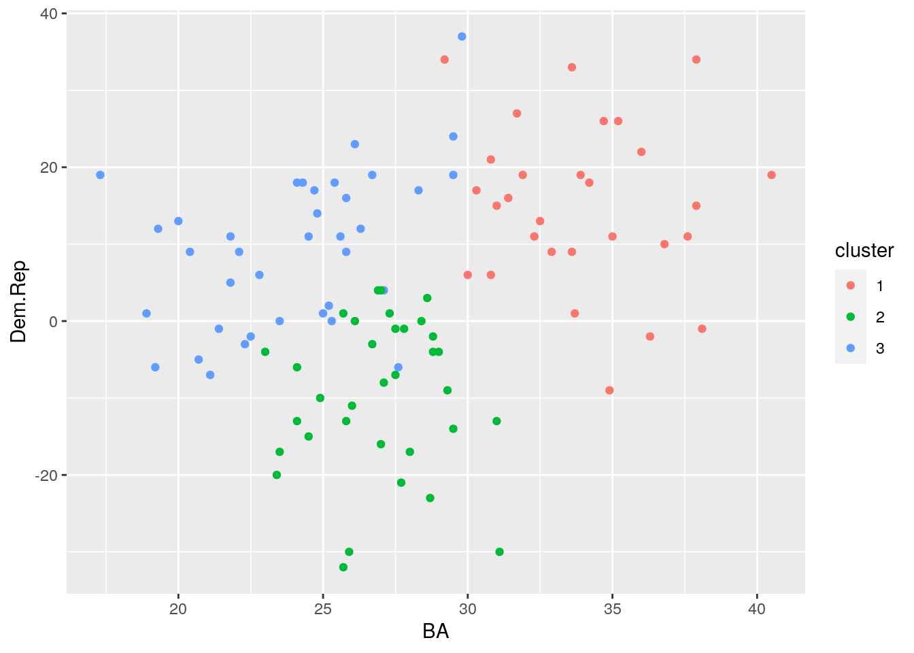

This project examines the U.S. presidential election cycles of 2008 and 2016. The two raw datasets describe state-by-state information about the two election cycles respectively: with each row representing a state, it contains information about its per capital income as of the year before the election year (in $, named “Income”), percentage of adults with at least a high school education (named “HS”), Difference in % Democrat and % Republican according to pre-election Gallup survey (named Dem.Rep), and the candidate elected by the specific state (named “ObamaWin” and “TrumpWin”, respectively, in 2008 and 2016). The datasets are acquired via public information on a list of R datasets from common packages https://vincentarelbundock.github.io/Rdatasets/datasets.html.
Potential associations I expect to find include a larger difference in %Dem and %GOP of the voting block of each (considering the growing polarized political environment during the Obama years). In addition, I would hypothesize a clear relationship between level of education and political inclination, and a similar but perhaps weaker relationship between per capita income and political inclination.
Acquiring and reading the raw datasets.
library(tidyverse)
library(ggplot2)
election_08 <- read_csv("https://vincentarelbundock.github.io/Rdatasets/csv/Stat2Data/Election08.csv")
election_16 <- read_csv("https://vincentarelbundock.github.io/Rdatasets/csv/Stat2Data/Election16.csv")# Delete respective redundant columns for each
# dataset: for both datasets delete X1 (dummy
# variable), Abr (abbreviation for states); for
# dataset of election_16 delete also the column Adv
# (percent of population with advanced degrees).
# Rename the column 'TrumpWin'/'ObamaWin' as
# 'Winner' for consistency.
Election_16 <- election_16 %>% select(-Adv) %>% select(-X1) %>%
select(-Abr) %>% rename(Winner = TrumpWin)
Election_08 <- election_08 %>% select(-X1) %>% select(-Abr) %>%
rename(Winner = ObamaWin)
# Left-join the two datasets; omit all rows with
# NAs.
wide_dat <- left_join(Election_08, Election_16, by = "State",
suffix = c("_2008", "_2016")) %>% na.omit()# Tidy. Mix the 10 columns into 2 via by pivoting
# longer. Spilt values like Income_2008 into two
# columns, one for type, the other for year.
# Finally, pivot wider s.t. each state in each
# election cycle constitutes an observation/row.
Election <- wide_dat %>% pivot_longer(contains("_")) %>%
separate(name, into = c("type", "year"), sep = "_") %>%
pivot_wider(names_from = "type", values_from = "value")
glimpse(Election)## Rows: 100
## Columns: 7
## $ State <chr> "Alabama", "Alabama", "Alaska", "Alaska", "Arizona", "Arizona…
## $ year <chr> "2008", "2016", "2008", "2016", "2008", "2016", "2008", "2016…
## $ Income <dbl> 32404, 43623, 40352, 72515, 33029, 50255, 30060, 41371, 41571…
## $ HS <dbl> 80.4, 84.3, 90.5, 92.1, 83.5, 86.0, 81.1, 84.8, 80.2, 81.8, 8…
## $ BA <dbl> 21.4, 23.5, 26.0, 28.0, 25.3, 27.5, 19.3, 21.1, 29.5, 31.4, 3…
## $ Dem.Rep <dbl> -1, -17, -11, -17, 0, -1, 12, -7, 19, 16, 11, -1, 26, 11, 23,…
## $ Winner <dbl> 0, 1, 0, 1, 0, 1, 0, 1, 1, 0, 1, 0, 1, 0, 1, 0, 1, 1, 0, 1, 1…I chose this join since I need to preserve all rows the 2008 dataset [which incidently has 51 observations] and add rows with matches from the 2016 dataset. There is only one observation on the joining variable in either dataset. In this case, the only row omitted was the observation of DC, for which there is data for 2008 but none for 2016. This is potentially a problem in that it eliminates the considerations for DC altogehter, which, although not yet an official U.S. state, is similar to one when it comes to the electoral college. This action joins the two datasets by state, therefore each row is an observation of a particular state in either election with pertinent data like median income, education level, and the elected candidate. The final dataset has two categorical variables [i.e., election cycle and the president eleccted], and three four numeric variables [i.e., per capita income, percent high school grads, percent college grads, Dem-GOP lean in pre-election gallup poll].
# Create a new column 'Elected' to make clear the
# winner each election cycle. Update the dataset to
# include the new column.
Election <- Election %>% mutate(Elected = case_when(year ==
"2008" & Winner == "0" ~ "Romney", year == "2008" &
Winner == "1" ~ "Obama", year == "2016" & Winner ==
"0" ~ "Hillary", year == "2016" & Winner == "1" ~
"Trump"))
Election %>% glimpse()## Rows: 100
## Columns: 8
## $ State <chr> "Alabama", "Alabama", "Alaska", "Alaska", "Arizona", "Arizona…
## $ year <chr> "2008", "2016", "2008", "2016", "2008", "2016", "2008", "2016…
## $ Income <dbl> 32404, 43623, 40352, 72515, 33029, 50255, 30060, 41371, 41571…
## $ HS <dbl> 80.4, 84.3, 90.5, 92.1, 83.5, 86.0, 81.1, 84.8, 80.2, 81.8, 8…
## $ BA <dbl> 21.4, 23.5, 26.0, 28.0, 25.3, 27.5, 19.3, 21.1, 29.5, 31.4, 3…
## $ Dem.Rep <dbl> -1, -17, -11, -17, 0, -1, 12, -7, 19, 16, 11, -1, 26, 11, 23,…
## $ Winner <dbl> 0, 1, 0, 1, 0, 1, 0, 1, 1, 0, 1, 0, 1, 0, 1, 0, 1, 1, 0, 1, 1…
## $ Elected <chr> "Romney", "Trump", "Romney", "Trump", "Romney", "Trump", "Rom…Election %>% filter(Elected == "Trump") %>% arrange(desc(Income)) %>%
glimpse()## Rows: 30
## Columns: 8
## $ State <chr> "Alaska", "Utah", "Wyoming", "North Dakota", "Pennsylvania", …
## $ year <chr> "2016", "2016", "2016", "2016", "2016", "2016", "2016", "2016…
## $ Income <dbl> 72515, 60727, 58840, 57181, 53599, 53357, 53207, 53183, 52997…
## $ HS <dbl> 92.1, 91.2, 92.3, 91.7, 89.2, 91.0, 81.9, 91.5, 90.7, 90.2, 9…
## $ BA <dbl> 28.0, 31.1, 25.7, 27.7, 28.6, 27.8, 27.6, 26.7, 29.3, 31.0, 2…
## $ Dem.Rep <dbl> -17, -30, -32, -21, 3, -1, -6, -3, -9, -13, -16, -1, -4, 4, 0…
## $ Winner <dbl> 1, 1, 1, 1, 1, 1, 1, 1, 1, 1, 1, 1, 1, 1, 1, 1, 1, 1, 1, 1, 1…
## $ Elected <chr> "Trump", "Trump", "Trump", "Trump", "Trump", "Trump", "Trump"…As shown, Alaska is the wealthiest state that elected Trump in 2016.
# Create the summarized statistics dataset
wide_dat_1 <- Election %>% summarize(mean_income = mean(Income),
sd_income = sd(Income), min_income = min(Income),
max_income = max(Income), mid50range_income = quantile(Income,
0.75) - quantile(Income, 0.25), mean_hs = mean(HS),
sd_hs = sd(HS), min_hs = min(HS), max_hs = max(HS),
mid50range_hs = quantile(HS, 0.75) - quantile(HS,
0.25), mean_hs = mean(HS), sd_hs = sd(HS),
min_hs = min(HS), max_hs = max(HS), mid50range_hs = quantile(HS,
0.75) - quantile(HS, 0.25), mean_ba = mean(BA),
sd_ba = sd(BA), min_ba = min(BA), max_ba = max(BA),
mid50range_ba = quantile(BA, 0.75) - quantile(BA,
0.25), mean_lean = mean(Dem.Rep), sd_lean = sd(Dem.Rep),
min_lean = min(Dem.Rep), max_lean = max(Dem.Rep),
mid50range_lean = quantile(Dem.Rep, 0.75) - quantile(Dem.Rep,
0.25))
# Tidy.
summary_stats <- wide_dat_1 %>% pivot_longer(contains("_")) %>%
separate(name, into = c("statistic", "type")) %>%
pivot_wider(names_from = "type", values_from = "value")
summary_stats## # A tibble: 5 x 5
## statistic income hs ba lean
## <chr> <dbl> <dbl> <dbl> <dbl>
## 1 mean 45742. 87.1 27.9 4.5
## 2 sd 11353. 3.55 4.92 14.6
## 3 min 28845 78.5 17.3 -32
## 4 max 74551 92.8 40.5 37
## 5 mid50range 17237. 5.02 6.35 20.2The mean, standard deviation, min, max, and the mid-50% range of each numeric variable are shown above.
# Summary statistics (mean, sd) after grouping by
# 'Elected' and 'year'.
wide_dat_2 <- Election %>% group_by(year, Elected) %>%
summarize(mean_income = mean(Income), sd_income = sd(Income),
mean_hs = mean(HS), sd_hs = sd(HS), mean_hs = mean(HS),
sd_hs = sd(HS), mean_ba = mean(BA), sd_ba = sd(BA),
mean_lean = mean(Dem.Rep), sd_lean = sd(Dem.Rep))
# Tidy the grouped summary statistics.
grouped_summary_stats <- wide_dat_2 %>% pivot_longer(contains("_")) %>%
separate(name, into = c("statistic", "type")) %>%
pivot_wider(names_from = "type", values_from = "value")
grouped_summary_stats## # A tibble: 8 x 7
## # Groups: year [2]
## year Elected statistic income hs ba lean
## <chr> <chr> <chr> <dbl> <dbl> <dbl> <dbl>
## 1 2008 Obama mean 39821. 86.9 29.0 19.4
## 2 2008 Obama sd 5420. 2.74 4.39 8.08
## 3 2008 Romney mean 33802. 84.9 23.8 0.409
## 4 2008 Romney sd 3462. 4.38 3.25 10.5
## 5 2016 Hillary mean 60931. 88.8 33.2 8.8
## 6 2016 Hillary sd 7988. 2.89 4.29 9.35
## 7 2016 Trump mean 49899. 87.9 26.2 -9.3
## 8 2016 Trump sd 6571. 3.21 2.95 9.65As expected, the voting block for Democratic candidates tend to have higher per capita income, percent high school and college education as compared to that of Republican candidates in each election cycle.
# Create a correlation matrix for all numeric
# variables
cormat <- Election %>% select(c(3:6)) %>% cor(use = "pair")
cormat## Income HS BA Dem.Rep
## Income 1.0000000 0.4881619 0.6666373 -0.1296984
## HS 0.4881619 1.0000000 0.5274676 -0.2150815
## BA 0.6666373 0.5274676 1.0000000 0.2891222
## Dem.Rep -0.1296984 -0.2150815 0.2891222 1.0000000As shown, there is a relatively large, positive correlation between percentage high school education and per capita income and an even larger correlation between percentage college education and per capita income. Additionally, a bachelor degree seems to be the finest predictor of the overall level of political polarization, as it has the greatest magnitude of correlation coefficient with Dem.Rep as compared to HS or BA.
cormat %>% as.data.frame %>% rownames_to_column %>%
pivot_longer(-1) %>% ggplot(aes(rowname, name,
fill = value)) + geom_tile() + geom_text(aes(label = round(value,
2))) + xlab("") + ylab("") + coord_fixed() + scale_fill_gradient2(low = "red",
mid = "white", high = "blue")
# First, change the values of percent high school
# education, percent bachelor education, percentage
# difference in Dem/Rep lean s.t. they are actually
# percentages.
Election1 <- Election %>% mutate(HS = HS * 0.01) %>%
mutate(BA = BA * 0.01) %>% mutate(Dem.Rep = Dem.Rep *
0.01)
# Plot.
ggplot(Election1, aes(HS, Income, color = Elected),
stat = "summary") + geom_point(size = 3) + xlab("Percent High School Education") +
ylab("Per Capita Income ($)") + ggtitle("High School Education, Income, and the Elected Candidate") +
scale_x_continuous(labels = scales::percent, breaks = seq(0,
1, 0.02)) + scale_color_manual(values = c("#00CC00",
"#0066CC", "#CC0000", "#CC00FF")) + theme(axis.text.x = element_text(angle = 60,
hjust = 1)) As shown, there is a conspicuous positive, linear relationship between percent high school education of a population and the per capita income of that population. Furthermore, from visual interpretation, it seems like the Romney voters have the overall lowest percent high school education and per capita income, and Hillary voters tends to have overall highest percent high school education and highest per capita income. Furthermore, there seems to be an overall slight increase in percent high school education and per capita income for U.S. population in the 2016 election cycle compared to 2008, as the two metrics are higher in Hillary and Trump voters compared to Romney and Obama voters.
# Firstly, a new color package.
# install.packages('wesanderson')
library(wesanderson)
# Plot.
ggplot(Election1, aes(x = BA, y = Dem.Rep, fill = Elected)) +
geom_violin(trim = F) + ggtitle("Political Inclination, Bachelor Degree, and Elected Leader") +
xlab("Percent Bachelor Degree") + ylab("Dem GOP Inclination") +
scale_y_continuous(labels = scales::percent, breaks = seq(-1,
1, 0.05)) + scale_x_continuous(labels = scales::percent,
breaks = seq(0, 1, 0.02)) + scale_fill_manual(values = wes_palette("GrandBudapest2",
n = 4)) + geom_boxplot(width = 0.1) + theme_minimal() +
theme(legend.position = "bottom") As shown by the violin plot, it is fair to conclude that Trump/Romney voters are less likely than Hillary/Obama voters to have a bachelor degree, with Romney voters least likely to have a bachelor degree and Hillary voters most likely to possess one. Interestingly, if the voting population is representative of the general population of the American public, it seems like the increasing political polarization that had occurred from the 2008 election cycle to 2016 was solely evident on the GOP side. While the range/dispersion of each voting block with respect to Dem/Rep inclination seems similar, voters who voted for Trump are inclined to be more Republican in 2016 than the voters that voted for Romney in 2016; and the voters who voted for Hillary in 2016 are less inclined to be Democratic than voters who voted for Obama in 2008. This could perhaps be explained by the polarizing nature of Trump’s electoral strategy, or the increasingly polarizing effect of major Conservative movements that occurred during the Obama years on the GOP electorate.
library(cluster)
# Consider only the numerical variables
clust_dat <- Election %>% select(-1:-2, -7:-8)
# Finding the proper number of clusters via
# silhouette width
sil_width <- vector() #Empty vector
for (i in 2:10) {
kms <- kmeans(clust_dat, centers = i) # compute k-means solutions
sil <- silhouette(kms$cluster, dist(clust_dat)) # get sil widths
sil_width[i] <- mean(sil[, 3])
}
ggplot() + geom_line(aes(x = 1:10), y = sil_width) +
scale_x_continuous(name = "k", breaks = 1:10) I choose there to be 3 clusters since k=3 has the greatest silhouette width, and thus at this value clusters are more cohesive and more separated.
# Scale the cluster, then use kmeans() to generate
# the clustering
kmeans1 <- clust_dat %>% scale %>% kmeans(3)
kmeans1## K-means clustering with 3 clusters of sizes 29, 34, 37
##
## Cluster means:
## Income HS BA Dem.Rep
## 1 0.8292172 0.4677585 1.2350918 0.7213321
## 2 0.1674889 0.5565624 -0.1875358 -0.9747394
## 3 -0.8038357 -0.8780572 -0.7957147 0.3303380
##
## Clustering vector:
## [1] 3 2 2 2 3 2 3 3 3 1 1 1 1 1 3 1 3 2 3 2 1 1 2 2 3 1 3 2 3 2 2 2 3 3 3 3 3
## [38] 2 1 1 1 1 3 2 1 1 3 3 3 2 2 2 2 2 3 2 1 1 1 1 3 3 1 1 3 2 2 2 3 2 3 2 3 1
## [75] 3 2 3 1 3 2 3 2 3 2 3 3 2 2 1 1 1 1 1 1 3 3 3 2 2 2
##
## Within cluster sum of squares by cluster:
## [1] 64.85030 55.35783 65.29490
## (between_SS / total_SS = 53.2 %)
##
## Available components:
##
## [1] "cluster" "centers" "totss" "withinss" "tot.withinss"
## [6] "betweenss" "size" "iter" "ifault"As shown, the sums of squares within each cluster are 40.75630, 87.19083, and 76.48395 for clusters 1, 2, and 3 respectively. Furthermore, the value of sums of squares within clusters/total sums of squares is about 48.4%, meaning that these clusters are not especially compact adn that members within the same group are not very similar.
# Save cluster assignment as a column in the
# dataset
kmeansclust <- clust_dat %>% mutate(cluster = as.factor(kmeans1$cluster))
# Make the plot of data colored by final assignment
# w.r.t. income and percent high school education
kmeansclust %>% ggplot(aes(Income, HS, color = cluster)) +
geom_point()
# Make the plot of data colored by final assignment
# w.r.t. percent bachelor education and Dem/Rep
# difference
kmeansclust %>% ggplot(aes(BA, Dem.Rep, color = cluster)) +
geom_point() The visual confirms the previous conclusions: the clusters are not especially well-grouped and compact.